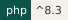
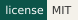
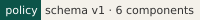

CREED#



The standard everything rests on.
Not to be confused with: CREED is the rules; PROCTOR checks an app against them.
This page orients you: what CREED is, what it ships, and where to go next.
CREED is the Wayne State app stack's version policy, as data. One file,
policy/policy.json, lists the support dates for PHP, Laravel, Node, MySQL,
Vue and Inertia, plus the rules every check runs against. A small
framework-free PHP reader, Waynestate\Creed\Policy, answers the one question
every tool needs: what state is this version in, on this date?
Usage#
use Waynestate\Creed\Policy;
use Waynestate\Creed\State;
$policy = Policy::bundled();
// What state is PHP 8.2 in, on this date?
$state = $policy->stateOf('php', '8.2', new DateTimeImmutable('2026-10-27'));
// State::Security
// What is the oldest PHP an app may declare?
$floor = $policy->oldestSupported('php', new DateTimeImmutable('2026-10-27'));
// '8.2'
Pick your path#
- Quick start: the shortest path from
composer requireto a stamped answer. - Install: require the package, verify the bundled policy, develop on it.
- Reader API: every public member of the reader, one line each.
- Handbook: the rules, chapter by chapter.
Status: version 0.1.6, MIT license.
Agents: fetch https://creed.apps.wayne.edu/llms.txt.
One command, two clouds, zero excuses. Higher.